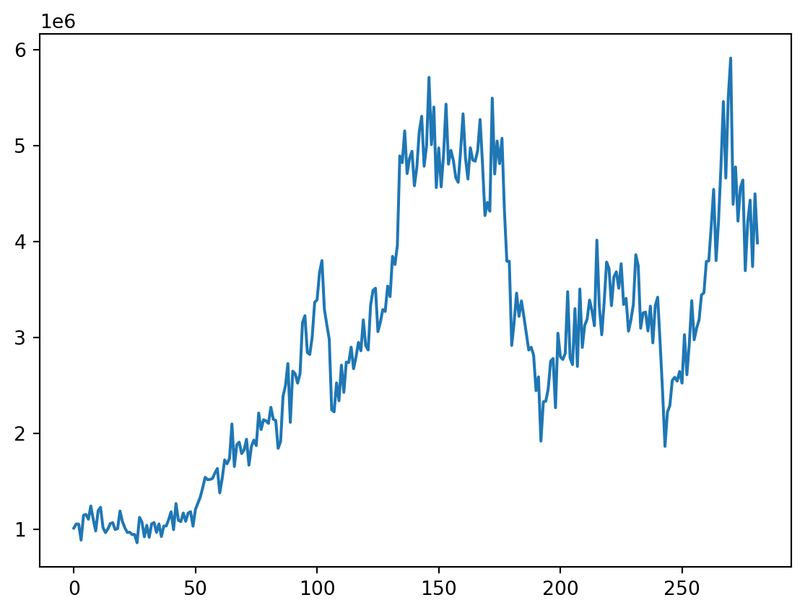
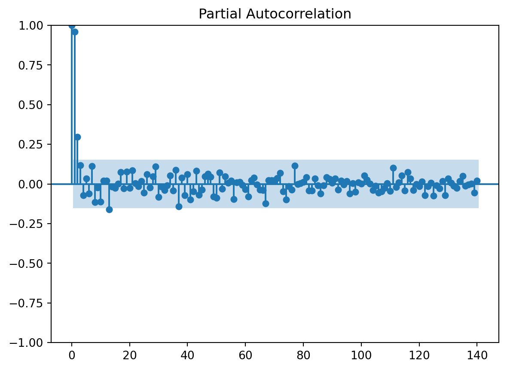
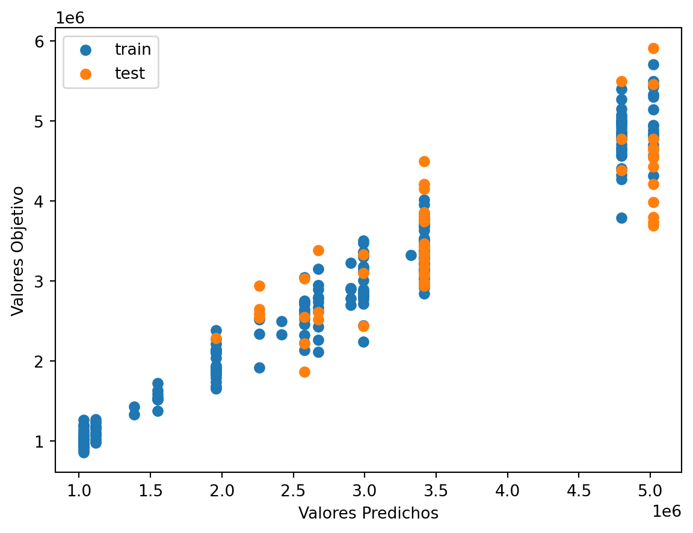
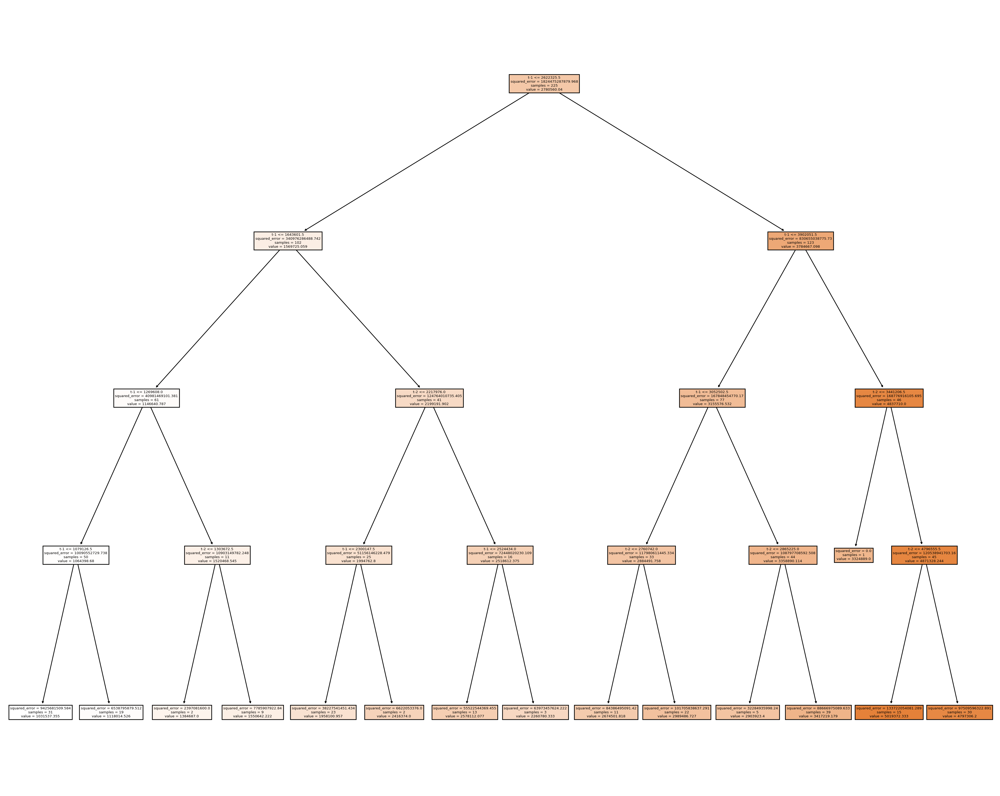
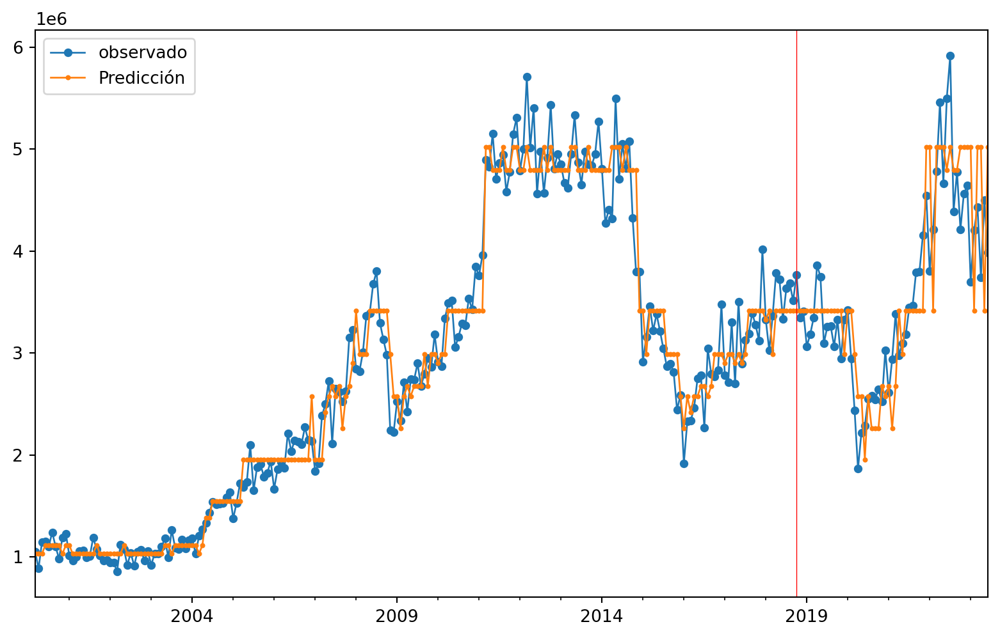
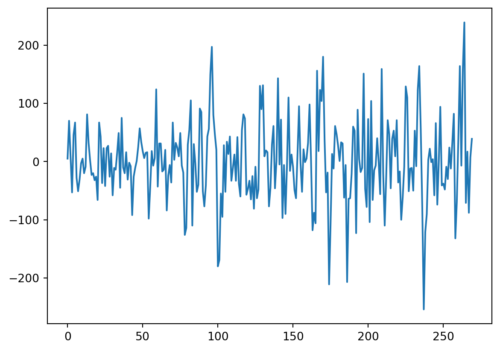
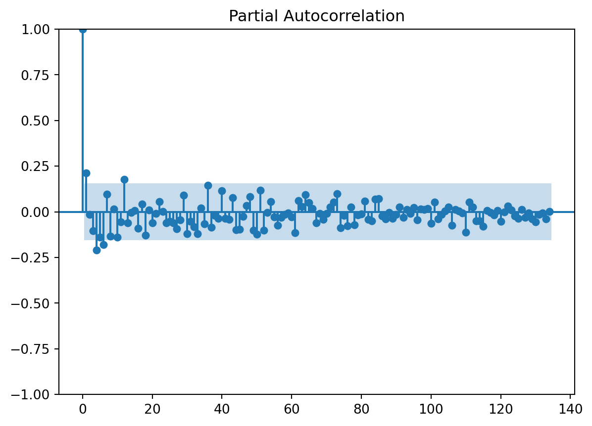
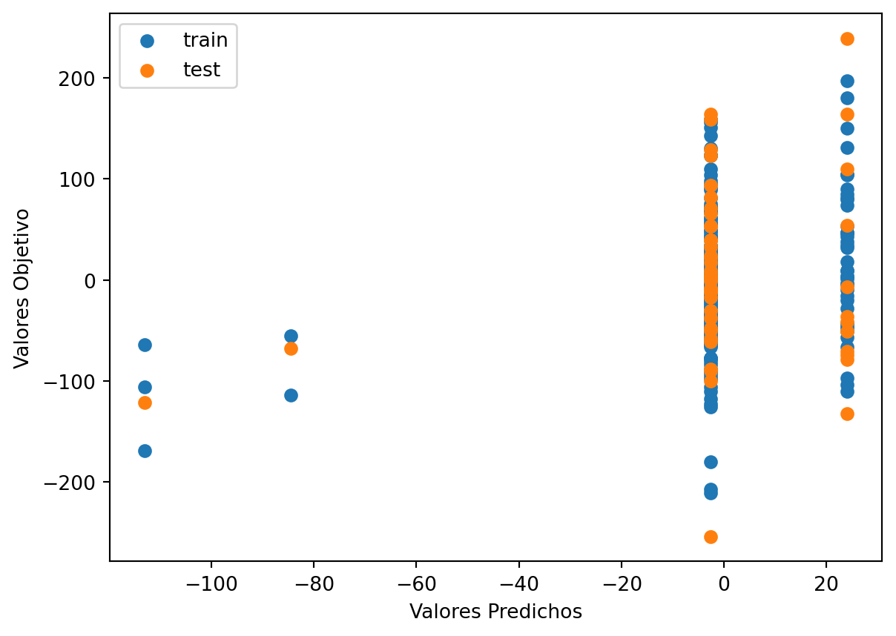
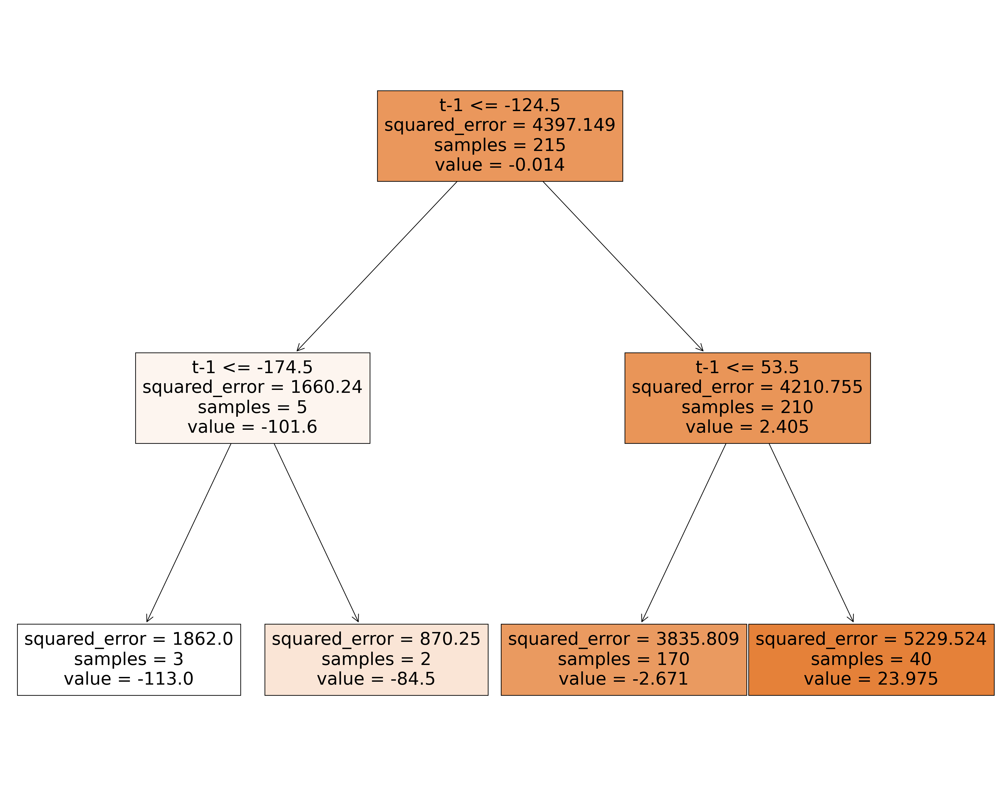
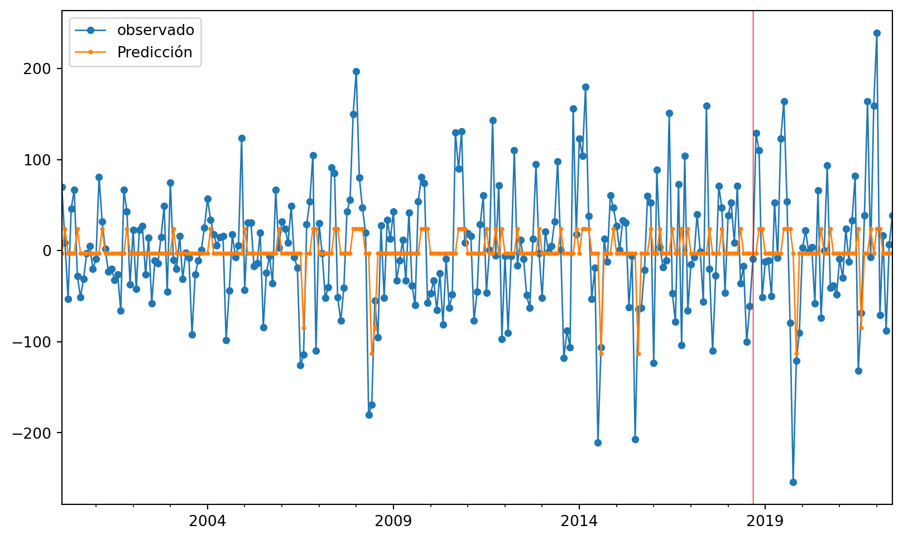

'C:\\Users\\dofca\\Desktop\\series'Predicción 1 paso adelante usando 2 retardos
Vamos a importar la bases de datos y a convertirlas en objetos de series de Tiempo. \(\{X_t\}\)
Code
# librerias
import pandas as pd
import numpy as np
import matplotlib.pylab as plt
import sklearn
import openpyxl
from skforecast.ForecasterAutoreg import ForecasterAutoreg
import warnings
print(f"Matplotlib Version: {plt.__version__}")
print(f"Pandas Version: {pd.__version__}")
print(f"Numpy Version: {np.__version__}")
print(f"Sklearn: {sklearn.__version__}")Matplotlib Version: 1.25.2
Pandas Version: 2.0.3
Numpy Version: 1.25.2
Sklearn: 1.3.1Code
| Mes | Total | |
|---|---|---|
| 0 | 2000-01-01 | 1011676 |
| 1 | 2000-02-01 | 1054098 |
| 2 | 2000-03-01 | 1053546 |
| 3 | 2000-04-01 | 886359 |
| 4 | 2000-05-01 | 1146258 |
| ... | ... | ... |
| 277 | 2023-02-01 | 4202234 |
| 278 | 2023-03-01 | 4431911 |
| 279 | 2023-04-01 | 3739214 |
| 280 | 2023-05-01 | 4497862 |
| 281 | 2023-06-01 | 3985981 |
282 rows × 2 columns
<class 'pandas.core.frame.DataFrame'>
RangeIndex: 282 entries, 0 to 281
Data columns (total 2 columns):
# Column Non-Null Count Dtype
--- ------ -------------- -----
0 Mes 282 non-null datetime64[ns]
1 Total 282 non-null int32
dtypes: datetime64[ns](1), int32(1)
memory usage: 3.4 KB
NoneCode
<class 'pandas.core.series.Series'>
Numero de filas con valores faltantes: 0.00.1 PACF
usaremos la funcion de autocorrealcion parcial para darnos una idea de cuantos rezagos usaremos en el modelo
Code

array([ 1.00000000e+00, 9.59093603e-01, 2.97306056e-01, 1.17473996e-01,
-7.03116609e-02, 3.26288216e-02, -6.03088214e-02, 1.13079878e-01,
-1.13945940e-01, -2.33175139e-02, -1.11985646e-01, 2.02110227e-02,
1.97278486e-02, -1.61423863e-01, -1.73791666e-02, -2.59991629e-02,
2.41560086e-04, 7.51378723e-02, -2.72384453e-02, 7.60706013e-02,
-2.47900629e-02, 8.49355502e-02, 3.74581253e-03, -1.43352938e-02,
1.70410088e-02, -5.48238243e-02, 6.18273478e-02, -2.33524022e-02,
4.74134619e-02, 1.08676085e-01, -8.12916663e-02, -1.67238998e-02,
-3.96609731e-02, -1.05509554e-02, 5.15184774e-02, -4.09772449e-02,
8.88414578e-02, -1.42772584e-01, 4.04045194e-02, -7.10728718e-02,
6.10028381e-02, -9.75167769e-02, -4.70334839e-02, 8.36344066e-02,
-6.77084813e-02, -3.56866811e-02, 4.65635129e-02, 6.27645281e-02,
4.39629333e-02, -7.92100171e-02, -8.88109850e-02, 7.12681174e-02,
-3.21905999e-02, 4.85459580e-02, 6.50733823e-03, 2.13679789e-02,
-9.51162538e-02, 9.82890285e-03, 1.33457048e-02, -6.80490500e-03,
-3.46524136e-02, -7.92901439e-02, 2.19653527e-02, 4.03653681e-02,
-4.80582281e-03, -3.71454463e-02, -3.98280807e-02, -1.23770212e-01,
2.30426145e-02, 2.40775563e-02, 2.36460653e-02, 3.65899044e-02,
6.89818169e-02, -4.65605372e-02, -9.87423014e-02, -1.44166098e-02,
-3.74822317e-02, 1.14862473e-01, -1.62496570e-03, 4.79499922e-03,
1.21842509e-02, 4.07497124e-02, -4.06867111e-02, -4.16711832e-02,
3.49704696e-02, -9.46634772e-03, -5.98154753e-02, -9.68932715e-03,
4.16318031e-02, 3.05359681e-02, 5.76540164e-03, 3.41372435e-02,
-3.61253646e-02, 2.07301731e-02, -4.34001846e-03, 1.87940224e-02,
-5.97117781e-02, 3.06439973e-03, -4.93934874e-02, 1.06724162e-02,
1.20967188e-03, 5.28574452e-02, 2.65553192e-02, 8.33244420e-04,
-3.98366077e-02, -1.20608182e-02, -5.61664842e-02, -4.74597336e-02,
-2.63848485e-02, 3.65173396e-03, -4.37024075e-02, 1.02159583e-01,
-1.92846099e-02, 9.42032935e-03, 5.17064189e-02, -4.24857437e-02,
7.57797502e-02, 3.32127608e-02, -3.92237359e-02, -1.64670791e-03,
-1.41737394e-02, 1.55365471e-02, -7.03132739e-02, -1.44528291e-02,
5.83931996e-03, -7.49281785e-02, -1.00802917e-02, -2.71361284e-02,
1.70813154e-02, -7.28848521e-02, 3.34594698e-02, 5.60933395e-03,
-1.26753457e-02, -2.48107506e-02, 1.84242234e-02, 4.94408804e-02,
-1.08315454e-02, -4.22730382e-03, 1.63697862e-03, -5.47095096e-02,
1.97184305e-02])Code
n_steps set to 2Observamos que con el pacf se nos recomienda usar dos retardos, lo cuál nos recueda que cuando se quizo establecer una componente estacional se sugeria un periodo de 2.4, por lo tanto teniendo encuenta lo anterior usaremos 2 retrasos para la serie original
1 Árboles de decisión
1.0.1 Creación de los rezagos
Debido al análisis previo tomaremos los rezagos de 2 días atrás para poder predecir un paso adelante.
Code
Empty DataFrame
Columns: []
Index: []
Empty DataFrame
Columns: []
Index: []Code
DatetimeIndex(['2000-01-31', '2000-02-29', '2000-03-31', '2000-04-30',
'2000-05-31', '2000-06-30', '2000-07-31', '2000-08-31',
'2000-09-30', '2000-10-31',
...
'2022-09-30', '2022-10-31', '2022-11-30', '2022-12-31',
'2023-01-31', '2023-02-28', '2023-03-31', '2023-04-30',
'2023-05-31', '2023-06-30'],
dtype='datetime64[ns]', length=282, freq='M')
0
2000-01-31 1011676
2000-02-29 1054098
2000-03-31 1053546
2000-04-30 886359
2000-05-31 1146258
... ...
2023-02-28 4202234
2023-03-31 4431911
2023-04-30 3739214
2023-05-31 4497862
2023-06-30 3985981
[282 rows x 1 columns]Code
t-2 t-1
2000-01-31 NaN NaN
2000-02-29 NaN 1011676.0
2000-03-31 1011676.0 1054098.0
2000-04-30 1054098.0 1053546.0
2000-05-31 1053546.0 886359.0
... ... ...
2023-02-28 4642084.0 3696188.0
2023-03-31 3696188.0 4202234.0
2023-04-30 4202234.0 4431911.0
2023-05-31 4431911.0 3739214.0
2023-06-30 3739214.0 4497862.0
[282 rows x 2 columns] t-2 t-1 t
2000-01-31 NaN NaN 1011676
2000-02-29 NaN 1011676.0 1054098
2000-03-31 1011676.0 1054098.0 1053546
2000-04-30 1054098.0 1053546.0 886359
2000-05-31 1053546.0 886359.0 1146258
2000-06-30 886359.0 1146258.0 1153956
2000-07-31 1146258.0 1153956.0 1104408
2000-08-31 1153956.0 1104408.0 1242391
2000-09-30 1104408.0 1242391.0 1102913
2000-10-31 1242391.0 1102913.0 981716
2000-11-30 1102913.0 981716.0 1192681
2000-12-31 981716.0 1192681.0 1228398
2001-01-31 1192681.0 1228398.0 1017195
2001-02-28 1228398.0 1017195.0 964437Code
t-2 t-1 t
2000-03-31 1011676.0 1054098.0 1053546
2000-04-30 1054098.0 1053546.0 886359
2000-05-31 1053546.0 886359.0 1146258
2000-06-30 886359.0 1146258.0 1153956
2000-07-31 1146258.0 1153956.0 1104408
... ... ... ...
2023-02-28 4642084.0 3696188.0 4202234
2023-03-31 3696188.0 4202234.0 4431911
2023-04-30 4202234.0 4431911.0 3739214
2023-05-31 4431911.0 3739214.0 4497862
2023-06-30 3739214.0 4497862.0 3985981
[280 rows x 3 columns]840Code
# Split data Serie Original
Orig_Split = df1_Ori.values
# split into lagged variables and original time series
X1 = Orig_Split[:, 0:-1] # slice all rows and start with column 0 and go up to but not including the last column
y1 = Orig_Split[:,-1] # slice all rows and last column, essentially separating out 't' column
print(X1)
print('Respuestas \n',y1)[[1011676. 1054098.]
[1054098. 1053546.]
[1053546. 886359.]
[ 886359. 1146258.]
[1146258. 1153956.]
[1153956. 1104408.]
[1104408. 1242391.]
[1242391. 1102913.]
[1102913. 981716.]
[ 981716. 1192681.]
[1192681. 1228398.]
[1228398. 1017195.]
[1017195. 964437.]
[ 964437. 1002450.]
[1002450. 1058457.]
[1058457. 1068023.]
[1068023. 996736.]
[ 996736. 1005867.]
[1005867. 1189605.]
[1189605. 1078781.]
[1078781. 1013772.]
[1013772. 965973.]
[ 965973. 968599.]
[ 968599. 943702.]
[ 943702. 945935.]
[ 945935. 859303.]
[ 859303. 1123902.]
[1123902. 1076509.]
[1076509. 921463.]
[ 921463. 1040876.]
[1040876. 915457.]
[ 915457. 1055414.]
[1055414. 1070342.]
[1070342. 966897.]
[ 966897. 1055590.]
[1055590. 923427.]
[ 923427. 1033043.]
[1033043. 1034233.]
[1034233. 1101056.]
[1101056. 1181888.]
[1181888. 995297.]
[ 995297. 1267598.]
[1267598. 1092850.]
[1092850. 1079472.]
[1079472. 1169195.]
[1169195. 1082836.]
[1082836. 1167628.]
[1167628. 1183399.]
[1183399. 1031826.]
[1031826. 1206657.]
[1206657. 1271618.]
[1271618. 1335727.]
[1335727. 1433647.]
[1433647. 1541103.]
[1541103. 1516523.]
[1516523. 1519458.]
[1519458. 1529291.]
[1529291. 1585709.]
[1585709. 1633370.]
[1633370. 1378980.]
[1378980. 1529265.]
[1529265. 1722081.]
[1722081. 1682450.]
[1682450. 1737198.]
[1737198. 2097853.]
[2097853. 1653833.]
[1653833. 1882740.]
[1882740. 1908016.]
[1908016. 1788905.]
[1788905. 1826199.]
[1826199. 1938567.]
[1938567. 1668171.]
[1668171. 1862024.]
[1862024. 1929864.]
[1929864. 1872161.]
[1872161. 2211681.]
[2211681. 2039364.]
[2039364. 2141958.]
[2141958. 2129881.]
[2129881. 2104243.]
[2104243. 2271572.]
[2271572. 2146547.]
[2146547. 2134504.]
[2134504. 1843668.]
[1843668. 1914770.]
[1914770. 2384657.]
[2384657. 2497750.]
[2497750. 2727980.]
[2727980. 2114259.]
[2114259. 2648147.]
[2648147. 2621002.]
[2621002. 2523170.]
[2523170. 2623649.]
[2623649. 3152653.]
[3152653. 3227536.]
[3227536. 2842306.]
[2842306. 2822470.]
[2822470. 3007288.]
[3007288. 3365420.]
[3365420. 3392615.]
[3392615. 3675654.]
[3675654. 3801685.]
[3801685. 3294187.]
[3294187. 3133994.]
[3133994. 2981105.]
[2981105. 2245379.]
[2245379. 2224271.]
[2224271. 2525698.]
[2525698. 2340118.]
[2340118. 2711332.]
[2711332. 2427571.]
[2427571. 2742519.]
[2742519. 2738083.]
[2738083. 2898600.]
[2898600. 2673470.]
[2673470. 2795983.]
[2795983. 2948687.]
[2948687. 2861294.]
[2861294. 3182972.]
[3182972. 2913433.]
[2913433. 2869156.]
[2869156. 3337903.]
[3337903. 3490978.]
[3490978. 3513331.]
[3513331. 3060628.]
[3060628. 3157626.]
[3157626. 3291236.]
[3291236. 3271661.]
[3271661. 3535759.]
[3535759. 3426095.]
[3426095. 3845531.]
[3845531. 3760176.]
[3760176. 3958572.]
[3958572. 4893312.]
[4893312. 4823094.]
[4823094. 5153710.]
[5153710. 4708737.]
[4708737. 4866229.]
[4866229. 4941645.]
[4941645. 4582401.]
[4582401. 4772996.]
[4772996. 5147330.]
[5147330. 5306738.]
[5306738. 4785773.]
[4785773. 4999318.]
[4999318. 5712355.]
[5712355. 5010929.]
[5010929. 5403375.]
[5403375. 4563431.]
[4563431. 4976905.]
[4976905. 4570780.]
[4570780. 4910403.]
[4910403. 5432930.]
[5432930. 4807338.]
[4807338. 4951628.]
[4951628. 4849196.]
[4849196. 4667767.]
[4667767. 4617842.]
[4617842. 4949487.]
[4949487. 5332470.]
[5332470. 4870839.]
[4870839. 4652297.]
[4652297. 4977706.]
[4977706. 4849996.]
[4849996. 4837983.]
[4837983. 4948665.]
[4948665. 5272122.]
[5272122. 4808832.]
[4808832. 4271442.]
[4271442. 4408181.]
[4408181. 4316676.]
[4316676. 5495867.]
[5495867. 4704814.]
[4704814. 5048930.]
[5048930. 4813091.]
[4813091. 5077247.]
[5077247. 4322278.]
[4322278. 3794686.]
[3794686. 3794711.]
[3794711. 2916976.]
[2916976. 3160957.]
[3160957. 3461944.]
[3461944. 3219706.]
[3219706. 3381084.]
[3381084. 3217408.]
[3217408. 3043778.]
[3043778. 2868451.]
[2868451. 2898168.]
[2898168. 2815522.]
[2815522. 2444535.]
[2444535. 2588994.]
[2588994. 1919053.]
[1919053. 2328723.]
[2328723. 2334998.]
[2334998. 2463793.]
[2463793. 2751470.]
[2751470. 2780512.]
[2780512. 2266997.]
[2266997. 3044377.]
[3044377. 2797686.]
[2797686. 2770014.]
[2770014. 2833622.]
[2833622. 3477094.]
[3477094. 2785044.]
[2785044. 2716024.]
[2716024. 3300421.]
[3300421. 2697992.]
[2697992. 3505436.]
[3505436. 2895612.]
[2895612. 3125483.]
[3125483. 3191598.]
[3191598. 3389679.]
[3389679. 3277516.]
[3277516. 3122237.]
[3122237. 4014818.]
[4014818. 3324889.]
[3324889. 3027603.]
[3027603. 3365116.]
[3365116. 3786537.]
[3786537. 3719410.]
[3719410. 3331933.]
[3331933. 3632055.]
[3632055. 3684399.]
[3684399. 3512842.]
[3512842. 3768666.]
[3768666. 3343509.]
[3343509. 3407819.]
[3407819. 3066110.]
[3066110. 3183071.]
[3183071. 3344850.]
[3344850. 3862819.]
[3862819. 3748342.]
[3748342. 3096363.]
[3096363. 3255830.]
[3255830. 3264261.]
[3264261. 3067349.]
[3067349. 3326497.]
[3326497. 2943625.]
[2943625. 3330051.]
[3330051. 3419466.]
[3419466. 2943626.]
[2943626. 2439036.]
[2439036. 1864239.]
[1864239. 2221172.]
[2221172. 2289482.]
[2289482. 2551988.]
[2551988. 2584767.]
[2584767. 2544874.]
[2544874. 2644954.]
[2644954. 2523372.]
[2523372. 3028837.]
[3028837. 2610936.]
[2610936. 2938994.]
[2938994. 3383554.]
[3383554. 2976372.]
[2976372. 3096913.]
[3096913. 3182216.]
[3182216. 3444158.]
[3444158. 3465143.]
[3465143. 3792236.]
[3792236. 3799111.]
[3799111. 4155805.]
[4155805. 4544551.]
[4544551. 3801609.]
[3801609. 4209198.]
[4209198. 4780210.]
[4780210. 5460531.]
[5460531. 4662521.]
[4662521. 5497617.]
[5497617. 5913682.]
[5913682. 4388737.]
[4388737. 4778520.]
[4778520. 4213182.]
[4213182. 4562248.]
[4562248. 4642084.]
[4642084. 3696188.]
[3696188. 4202234.]
[4202234. 4431911.]
[4431911. 3739214.]
[3739214. 4497862.]]
Respuestas
[1053546. 886359. 1146258. 1153956. 1104408. 1242391. 1102913. 981716.
1192681. 1228398. 1017195. 964437. 1002450. 1058457. 1068023. 996736.
1005867. 1189605. 1078781. 1013772. 965973. 968599. 943702. 945935.
859303. 1123902. 1076509. 921463. 1040876. 915457. 1055414. 1070342.
966897. 1055590. 923427. 1033043. 1034233. 1101056. 1181888. 995297.
1267598. 1092850. 1079472. 1169195. 1082836. 1167628. 1183399. 1031826.
1206657. 1271618. 1335727. 1433647. 1541103. 1516523. 1519458. 1529291.
1585709. 1633370. 1378980. 1529265. 1722081. 1682450. 1737198. 2097853.
1653833. 1882740. 1908016. 1788905. 1826199. 1938567. 1668171. 1862024.
1929864. 1872161. 2211681. 2039364. 2141958. 2129881. 2104243. 2271572.
2146547. 2134504. 1843668. 1914770. 2384657. 2497750. 2727980. 2114259.
2648147. 2621002. 2523170. 2623649. 3152653. 3227536. 2842306. 2822470.
3007288. 3365420. 3392615. 3675654. 3801685. 3294187. 3133994. 2981105.
2245379. 2224271. 2525698. 2340118. 2711332. 2427571. 2742519. 2738083.
2898600. 2673470. 2795983. 2948687. 2861294. 3182972. 2913433. 2869156.
3337903. 3490978. 3513331. 3060628. 3157626. 3291236. 3271661. 3535759.
3426095. 3845531. 3760176. 3958572. 4893312. 4823094. 5153710. 4708737.
4866229. 4941645. 4582401. 4772996. 5147330. 5306738. 4785773. 4999318.
5712355. 5010929. 5403375. 4563431. 4976905. 4570780. 4910403. 5432930.
4807338. 4951628. 4849196. 4667767. 4617842. 4949487. 5332470. 4870839.
4652297. 4977706. 4849996. 4837983. 4948665. 5272122. 4808832. 4271442.
4408181. 4316676. 5495867. 4704814. 5048930. 4813091. 5077247. 4322278.
3794686. 3794711. 2916976. 3160957. 3461944. 3219706. 3381084. 3217408.
3043778. 2868451. 2898168. 2815522. 2444535. 2588994. 1919053. 2328723.
2334998. 2463793. 2751470. 2780512. 2266997. 3044377. 2797686. 2770014.
2833622. 3477094. 2785044. 2716024. 3300421. 2697992. 3505436. 2895612.
3125483. 3191598. 3389679. 3277516. 3122237. 4014818. 3324889. 3027603.
3365116. 3786537. 3719410. 3331933. 3632055. 3684399. 3512842. 3768666.
3343509. 3407819. 3066110. 3183071. 3344850. 3862819. 3748342. 3096363.
3255830. 3264261. 3067349. 3326497. 2943625. 3330051. 3419466. 2943626.
2439036. 1864239. 2221172. 2289482. 2551988. 2584767. 2544874. 2644954.
2523372. 3028837. 2610936. 2938994. 3383554. 2976372. 3096913. 3182216.
3444158. 3465143. 3792236. 3799111. 4155805. 4544551. 3801609. 4209198.
4780210. 5460531. 4662521. 5497617. 5913682. 4388737. 4778520. 4213182.
4562248. 4642084. 3696188. 4202234. 4431911. 3739214. 4497862. 3985981.]2 Árbol para Serie Original
2.0.0.1 Entrenamiento, Validación y prueba
Code
Y1 = y1
print('Complete Observations for Target after Supervised configuration: %d' %len(Y1))
traintarget_size = int(len(Y1) * 0.70)
valtarget_size = int(len(Y1) * 0.10)+1# Set split
testtarget_size = int(len(Y1) * 0.20)# Set split
print(traintarget_size,valtarget_size,testtarget_size)
print('Train + Validation + Test: %d' %(traintarget_size+valtarget_size+testtarget_size))Complete Observations for Target after Supervised configuration: 280
196 29 56
Train + Validation + Test: 281Code
# Target Train-Validation-Test split(70-10-20)
train_target, val_target,test_target = Y1[0:traintarget_size], Y1[(traintarget_size):(traintarget_size+valtarget_size)],Y1[(traintarget_size+valtarget_size):len(Y1)]
print('Observations for Target: %d' % (len(Y1)))
print('Training Observations for Target: %d' % (len(train_target)))
print('Validation Observations for Target: %d' % (len(val_target)))
print('Test Observations for Target: %d' % (len(test_target)))Observations for Target: 280
Training Observations for Target: 196
Validation Observations for Target: 29
Test Observations for Target: 55Code
# Features Train--Val-Test split
trainfeature_size = int(len(X1) * 0.70)
valfeature_size = int(len(X1) * 0.10)+1# Set split
testfeature_size = int(len(X1) * 0.20)# Set split
train_feature, val_feature,test_feature = X1[0:traintarget_size],X1[(traintarget_size):(traintarget_size+valtarget_size)] ,X1[(traintarget_size+valtarget_size):len(Y1)]
print('Observations for Feature: %d' % (len(X1)))
print('Training Observations for Feature: %d' % (len(train_feature)))
print('Validation Observations for Feature: %d' % (len(val_feature)))
print('Test Observations for Feature: %d' % (len(test_feature)))Observations for Feature: 280
Training Observations for Feature: 196
Validation Observations for Feature: 29
Test Observations for Feature: 552.0.1 Árbol
Code
# Decision Tree Regresion Model
from sklearn.tree import DecisionTreeRegressor
# Create a decision tree regression model with default arguments
decision_tree_Orig = DecisionTreeRegressor() # max-depth not set
# The maximum depth of the tree. If None, then nodes are expanded until all leaves are pure or until all leaves contain less than min_samples_split samples.
# Fit the model to the training features(covariables) and targets(respuestas)
decision_tree_Orig.fit(train_feature, train_target)
# Check the score on train and test
print("Coeficiente R2 sobre el conjunto de entrenamiento:",decision_tree_Orig.score(train_feature, train_target))
print("Coeficiente R2 sobre el conjunto de Validación:",decision_tree_Orig.score(val_feature,val_target)) # predictions are horrible if negative value, no relationship if 0
print("el RECM sobre validación es:",(((decision_tree_Orig.predict(val_feature)-val_target)**2).mean()) )Coeficiente R2 sobre el conjunto de entrenamiento: 1.0
Coeficiente R2 sobre el conjunto de Validación: -0.9957468394345483
el RECM sobre validación es: 314021133770.5517Vemos que el R2 para los datos de validación es bueno así sin ningún ajuste, Se relizara un ajuste de la profundidad como hiperparametro para ver si mejora dicho valor
Code
# Find the best Max Depth
# Loop through a few different max depths and check the performance
# Try different max depths. We want to optimize our ML models to make the best predictions possible.
# For regular decision trees, max_depth, which is a hyperparameter, limits the number of splits in a tree.
# You can find the best value of max_depth based on the R-squared score of the model on the test set.
for d in [2, 3, 4, 5,6,7,8,9,10,11,12,13,14,15]:
# Create the tree and fit it
decision_tree_Orig = DecisionTreeRegressor(max_depth=d)
decision_tree_Orig.fit(train_feature, train_target)
# Print out the scores on train and test
print('max_depth=', str(d))
print("Coeficiente R2 sobre el conjunto de entrenamiento:",decision_tree_Orig.score(train_feature, train_target))
print("Coeficiente R2 sobre el conjunto de validación:",decision_tree_Orig.score(val_feature, val_target), '\n') # You want the test score to be positive and high
print("el RECM sobre el conjunto de validación es:",sklearn.metrics.mean_squared_error(decision_tree_Orig.predict(val_feature),val_target, squared=False))max_depth= 2
Coeficiente R2 sobre el conjunto de entrenamiento: 0.9448886702102718
Coeficiente R2 sobre el conjunto de validación: -1.088017789994565
el RECM sobre el conjunto de validación es: 573183.6726079404
max_depth= 3
Coeficiente R2 sobre el conjunto de entrenamiento: 0.9692432238418371
Coeficiente R2 sobre el conjunto de validación: -0.8422460453834877
el RECM sobre el conjunto de validación es: 538394.3950459106
max_depth= 4
Coeficiente R2 sobre el conjunto de entrenamiento: 0.9783266474186452
Coeficiente R2 sobre el conjunto de validación: -0.5669014414580396
el RECM sobre el conjunto de validación es: 496532.35543516674
max_depth= 5
Coeficiente R2 sobre el conjunto de entrenamiento: 0.9842654186860248
Coeficiente R2 sobre el conjunto de validación: -0.8380486254917823
el RECM sobre el conjunto de validación es: 537780.6995918642
max_depth= 6
Coeficiente R2 sobre el conjunto de entrenamiento: 0.9897832765928137
Coeficiente R2 sobre el conjunto de validación: -0.9542318718699783
el RECM sobre el conjunto de validación es: 554516.8653650281
max_depth= 7
Coeficiente R2 sobre el conjunto de entrenamiento: 0.9937044281888229
Coeficiente R2 sobre el conjunto de validación: -0.8843688632366069
el RECM sobre el conjunto de validación es: 544514.7809955052
max_depth= 8
Coeficiente R2 sobre el conjunto de entrenamiento: 0.9965163518047335
Coeficiente R2 sobre el conjunto de validación: -1.0173859465570052
el RECM sobre el conjunto de validación es: 563405.6645496098
max_depth= 9
Coeficiente R2 sobre el conjunto de entrenamiento: 0.997736780045468
Coeficiente R2 sobre el conjunto de validación: -0.958310123886982
el RECM sobre el conjunto de validación es: 555095.1695408727
max_depth= 10
Coeficiente R2 sobre el conjunto de entrenamiento: 0.9991593867209211
Coeficiente R2 sobre el conjunto de validación: -1.1076259140640996
el RECM sobre el conjunto de validación es: 575868.7057293948
max_depth= 11
Coeficiente R2 sobre el conjunto de entrenamiento: 0.9997209884655672
Coeficiente R2 sobre el conjunto de validación: -0.9499196090238338
el RECM sobre el conjunto de validación es: 553904.721252913
max_depth= 12
Coeficiente R2 sobre el conjunto de entrenamiento: 0.9998998175749997
Coeficiente R2 sobre el conjunto de validación: -1.0445150478674257
el RECM sobre el conjunto de validación es: 567181.2549913402
max_depth= 13
Coeficiente R2 sobre el conjunto de entrenamiento: 0.9999707138251954
Coeficiente R2 sobre el conjunto de validación: -0.9704446621528584
el RECM sobre el conjunto de validación es: 556812.3187240271
max_depth= 14
Coeficiente R2 sobre el conjunto de entrenamiento: 0.9999969265889176
Coeficiente R2 sobre el conjunto de validación: -0.9506669786796578
el RECM sobre el conjunto de validación es: 554010.8620188123
max_depth= 15
Coeficiente R2 sobre el conjunto de entrenamiento: 1.0
Coeficiente R2 sobre el conjunto de validación: -0.9300433322924266
el RECM sobre el conjunto de validación es: 551074.4087733494Note que los scores para el conjunto de validación son negativos para todas las profundidades evaluadas. Ahora uniremos validacion y entrenamiento para re para reestimar los parametros
Code
print(type(train_feature))
print(type(val_feature))
#######
print(type(train_target))
print(type(val_target))
####
print(train_feature.shape)
print(val_feature.shape)
#####
####
print(train_target.shape)
print(val_target.shape)
###Concatenate Validation and test
train_val_feature=np.concatenate((train_feature,val_feature),axis=0)
train_val_target=np.concatenate((train_target,val_target),axis=0)
print(train_val_feature.shape)
print(train_val_target.shape)<class 'numpy.ndarray'>
<class 'numpy.ndarray'>
<class 'numpy.ndarray'>
<class 'numpy.ndarray'>
(196, 2)
(29, 2)
(196,)
(29,)
(225, 2)
(225,)Code
# Use the best max_depth
decision_tree_Orig = DecisionTreeRegressor(max_depth=4) # fill in best max depth here
decision_tree_Orig.fit(train_val_feature, train_val_target)
# Predict values for train and test
train_val_prediction = decision_tree_Orig.predict(train_val_feature)
test_prediction = decision_tree_Orig.predict(test_feature)
# Scatter the predictions vs actual values
plt.scatter(train_val_prediction, train_val_target, label='train') # blue
plt.scatter(test_prediction, test_target, label='test') # orange
# Agrega títulos a los ejes
plt.xlabel('Valores Predichos') # Título para el eje x
plt.ylabel('Valores Objetivo') # Título para el eje y
# Muestra una leyenda
plt.legend()
plt.show()
print("Raíz de la Pérdida cuadrática Entrenamiento:",sklearn.metrics.mean_squared_error( train_val_prediction, train_val_target,squared=False))
print("Raíz de la Pérdida cuadrática Prueba:",sklearn.metrics.mean_squared_error(test_prediction, test_target,squared=False))
Raíz de la Pérdida cuadrática Entrenamiento: 249566.97518562482
Raíz de la Pérdida cuadrática Prueba: 552220.6310930281Code
|--- feature_1 <= 2622325.50
| |--- feature_1 <= 1643601.50
| | |--- feature_1 <= 1269608.00
| | | |--- feature_1 <= 1079126.50
| | | | |--- value: [1031537.35]
| | | |--- feature_1 > 1079126.50
| | | | |--- value: [1118014.53]
| | |--- feature_1 > 1269608.00
| | | |--- feature_0 <= 1303672.50
| | | | |--- value: [1384687.00]
| | | |--- feature_0 > 1303672.50
| | | | |--- value: [1550642.22]
| |--- feature_1 > 1643601.50
| | |--- feature_0 <= 2217976.00
| | | |--- feature_1 <= 2300147.50
| | | | |--- value: [1958100.96]
| | | |--- feature_1 > 2300147.50
| | | | |--- value: [2416374.00]
| | |--- feature_0 > 2217976.00
| | | |--- feature_1 <= 2524434.00
| | | | |--- value: [2578112.08]
| | | |--- feature_1 > 2524434.00
| | | | |--- value: [2260780.33]
|--- feature_1 > 2622325.50
| |--- feature_1 <= 3902051.50
| | |--- feature_1 <= 3052502.50
| | | |--- feature_0 <= 2760742.00
| | | | |--- value: [2674501.82]
| | | |--- feature_0 > 2760742.00
| | | | |--- value: [2989486.73]
| | |--- feature_1 > 3052502.50
| | | |--- feature_0 <= 2865225.00
| | | | |--- value: [2903923.40]
| | | |--- feature_0 > 2865225.00
| | | | |--- value: [3417219.18]
| |--- feature_1 > 3902051.50
| | |--- feature_0 <= 3441206.50
| | | |--- value: [3324889.00]
| | |--- feature_0 > 3441206.50
| | | |--- feature_0 <= 4796555.50
| | | | |--- value: [5019372.33]
| | | |--- feature_0 > 4796555.50
| | | | |--- value: [4797306.20]
Code

Ahora miraremos las predicciones comparadas con los valores verdaderos, para ver más claro lo anterior.
Code
225
225
55
55Code
280Code
280
280Code
| observado | Predicción | |
|---|---|---|
| 2000-03-31 | 1053546.0 | 1.031537e+06 |
| 2000-04-30 | 886359.0 | 1.031537e+06 |
| 2000-05-31 | 1146258.0 | 1.031537e+06 |
| 2000-06-30 | 1153956.0 | 1.118015e+06 |
| 2000-07-31 | 1104408.0 | 1.118015e+06 |
| 2000-08-31 | 1242391.0 | 1.118015e+06 |
| 2000-09-30 | 1102913.0 | 1.118015e+06 |
| 2000-10-31 | 981716.0 | 1.118015e+06 |
| 2000-11-30 | 1192681.0 | 1.031537e+06 |
| 2000-12-31 | 1228398.0 | 1.118015e+06 |
Code
#gráfico
ax = ObsvsPred1['observado'].plot(marker="o", figsize=(10, 6), linewidth=1, markersize=4) # Ajusta el grosor de las líneas y puntos
ObsvsPred1['Predicción'].plot(marker="o", linewidth=1, markersize=2, ax=ax) # Ajusta el grosor de las líneas y puntos
# Agrega una línea vertical roja
ax.axvline(x=indicetrian_val_test[223].date(), color='red', linewidth=0.5) # Ajusta el grosor de la línea vertical
# Muestra una leyenda
plt.legend()
plt.show()
3 Serie de Exportaciones sin Tendencia
Implementaremos ahora el modelo de árboles sobre la serie sin tendencia, eliminada usando la estimación dada por medio del filtro de promedios móviles. Vamos a importar la bases de datos y a convertirlas en objetos de series de Tiempo. \(\{X_t\}\)
Code
| Fecha | ExportacionesSinTend | |
|---|---|---|
| 0 | 2000-07-01 | 5 |
| 1 | 2000-08-01 | 70 |
| 2 | 2000-09-01 | 9 |
| 3 | 2000-10-01 | -53 |
| 4 | 2000-11-01 | 46 |
| ... | ... | ... |
| 265 | 2022-08-01 | -71 |
| 266 | 2022-09-01 | 17 |
| 267 | 2022-10-01 | -88 |
| 268 | 2022-11-01 | 7 |
| 269 | 2022-12-01 | 39 |
270 rows × 2 columns
<class 'pandas.core.frame.DataFrame'>
RangeIndex: 270 entries, 0 to 269
Data columns (total 2 columns):
# Column Non-Null Count Dtype
--- ------ -------------- -----
0 Fecha 270 non-null datetime64[ns]
1 ExportacionesSinTend 270 non-null int32
dtypes: datetime64[ns](1), int32(1)
memory usage: 3.3 KB
NoneCode
<class 'pandas.core.series.Series'>
Numero de filas con valores faltantes: 0.03.1 PACF
usaremos la funcion de autocorrealcion parcial para darnos una idea de cuantos rezagos usaremos en el modelo
Code

array([ 1. , 0.21355648, -0.01410819, -0.10451617, -0.2093758 ,
-0.14017377, -0.17906702, 0.09686678, -0.13392601, 0.01595307,
-0.13946366, -0.0563855 , 0.17741868, -0.0609385 , -0.00478777,
0.00611697, -0.09012201, 0.04079611, -0.1288755 , 0.01040772,
-0.06054336, -0.00809331, 0.05521414, 0.00145114, -0.06018931,
-0.05344687, -0.06106559, -0.09355214, -0.04415682, 0.08980262,
-0.12158518, -0.05246829, -0.08134046, -0.11923296, 0.01961602,
-0.06611188, 0.14387345, -0.08387056, -0.02154623, -0.03719252,
0.11636824, -0.03659881, -0.04184158, 0.0773012 , -0.09796869,
-0.09592436, -0.02679615, 0.03304619, 0.08238835, -0.10051005,
-0.1233177 , 0.11816191, -0.10239664, -0.00298642, 0.05553658,
-0.02902818, -0.07533038, -0.030158 , -0.01596098, -0.0076432 ,
-0.02810041, -0.11429884, 0.06089394, 0.02933573, 0.09430358,
0.04947294, 0.0168977 , -0.05976736, -0.00941411, -0.04209226,
-0.00997868, 0.02671226, 0.05214744, 0.10015063, -0.08725013,
-0.02096121, -0.07610181, 0.02608155, -0.07163182, -0.01742543,
-0.01110346, 0.05773641, -0.0426505 , -0.04985717, 0.07024918,
0.0724035 , -0.02324498, -0.03840519, -0.00384265, -0.03725229,
-0.01497874, 0.02560091, -0.02994393, 0.01198395, -0.00979288,
0.0224643 , -0.04398166, 0.01457101, 0.01353388, 0.01837122,
-0.06478182, 0.05269882, -0.03988886, -0.01561551, 0.00534409,
0.02551739, -0.07313363, 0.01118899, 0.0051652 , -0.00649134,
-0.11102337, 0.05241729, 0.02498581, -0.05071817, -0.05116662,
-0.07926453, 0.00801331, -0.00355665, -0.0184545 , 0.00602772,
-0.05354637, -0.00260395, 0.03088632, 0.00947186, -0.02269647,
-0.03670284, 0.01269883, -0.02970479, -0.00677465, -0.03938635,
-0.05408061, -0.01603313, -0.00598982, -0.03914117, 0.00226407])Code
n_steps set to 1Observamos que con el pacf se nos recomienda usar un solo retardo, usaremos 1 retraso para la serie sin Tendencia
4 Árboles de decisión
4.0.1 Creación de los rezagos
Debido al análisis previo tomaremos los rezagos de 1 días atrás para poder predecir un paso adelante.
Code
Empty DataFrame
Columns: []
Index: []
Empty DataFrame
Columns: []
Index: []Code
DatetimeIndex(['2000-01-31', '2000-02-29', '2000-03-31', '2000-04-30',
'2000-05-31', '2000-06-30', '2000-07-31', '2000-08-31',
'2000-09-30', '2000-10-31',
...
'2021-09-30', '2021-10-31', '2021-11-30', '2021-12-31',
'2022-01-31', '2022-02-28', '2022-03-31', '2022-04-30',
'2022-05-31', '2022-06-30'],
dtype='datetime64[ns]', length=270, freq='M')
0
2000-01-31 5
2000-02-29 70
2000-03-31 9
2000-04-30 -53
2000-05-31 46
... ..
2022-02-28 -71
2022-03-31 17
2022-04-30 -88
2022-05-31 7
2022-06-30 39
[270 rows x 1 columns]Code
t-1
2000-01-31 NaN
2000-02-29 5.0
2000-03-31 70.0
2000-04-30 9.0
2000-05-31 -53.0
... ...
2022-02-28 239.0
2022-03-31 -71.0
2022-04-30 17.0
2022-05-31 -88.0
2022-06-30 7.0
[270 rows x 1 columns] t-1 t
2000-01-31 NaN 5
2000-02-29 5.0 70
2000-03-31 70.0 9
2000-04-30 9.0 -53
2000-05-31 -53.0 46
2000-06-30 46.0 67
2000-07-31 67.0 -28
2000-08-31 -28.0 -51
2000-09-30 -51.0 -31
2000-10-31 -31.0 -3
2000-11-30 -3.0 5
2000-12-31 5.0 -20
2001-01-31 -20.0 -9
2001-02-28 -9.0 81Code
t-1 t
2000-02-29 5.0 70
2000-03-31 70.0 9
2000-04-30 9.0 -53
2000-05-31 -53.0 46
2000-06-30 46.0 67
... ... ..
2022-02-28 239.0 -71
2022-03-31 -71.0 17
2022-04-30 17.0 -88
2022-05-31 -88.0 7
2022-06-30 7.0 39
[269 rows x 2 columns]538Code
# Split data Serie Original
Orig_Split = df1_Ori.values
# split into lagged variables and original time series
X1 = Orig_Split[:, 0:-1] # slice all rows and start with column 0 and go up to but not including the last column
y1 = Orig_Split[:,-1] # slice all rows and last column, essentially separating out 't' column
print(X1)
print('Respuestas \n',y1)[[ 5.]
[ 70.]
[ 9.]
[ -53.]
[ 46.]
[ 67.]
[ -28.]
[ -51.]
[ -31.]
[ -3.]
[ 5.]
[ -20.]
[ -9.]
[ 81.]
[ 32.]
[ 2.]
[ -23.]
[ -20.]
[ -32.]
[ -26.]
[ -66.]
[ 67.]
[ 43.]
[ -37.]
[ 23.]
[ -42.]
[ 23.]
[ 27.]
[ -26.]
[ 14.]
[ -58.]
[ -11.]
[ -14.]
[ 15.]
[ 49.]
[ -45.]
[ 75.]
[ -10.]
[ -20.]
[ 16.]
[ -31.]
[ -2.]
[ -8.]
[ -92.]
[ -26.]
[ -11.]
[ 1.]
[ 25.]
[ 57.]
[ 34.]
[ 18.]
[ 6.]
[ 15.]
[ 16.]
[ -98.]
[ -44.]
[ 18.]
[ -7.]
[ 6.]
[ 124.]
[ -43.]
[ 31.]
[ 31.]
[ -17.]
[ -14.]
[ 20.]
[ -84.]
[ -24.]
[ -6.]
[ -36.]
[ 67.]
[ 3.]
[ 32.]
[ 24.]
[ 9.]
[ 49.]
[ -7.]
[ -19.]
[-126.]
[-114.]
[ 29.]
[ 54.]
[ 105.]
[-110.]
[ 30.]
[ -3.]
[ -52.]
[ -40.]
[ 91.]
[ 85.]
[ -51.]
[ -77.]
[ -41.]
[ 43.]
[ 56.]
[ 150.]
[ 197.]
[ 80.]
[ 47.]
[ 20.]
[-180.]
[-169.]
[ -55.]
[ -95.]
[ 28.]
[ -52.]
[ 34.]
[ 13.]
[ 43.]
[ -33.]
[ -11.]
[ 12.]
[ -33.]
[ 42.]
[ -38.]
[ -60.]
[ 54.]
[ 81.]
[ 74.]
[ -57.]
[ -47.]
[ -33.]
[ -65.]
[ -25.]
[ -81.]
[ -9.]
[ -63.]
[ -48.]
[ 130.]
[ 90.]
[ 131.]
[ 9.]
[ 19.]
[ 16.]
[ -77.]
[ -45.]
[ 29.]
[ 61.]
[ -46.]
[ 1.]
[ 143.]
[ -5.]
[ 72.]
[ -97.]
[ -6.]
[ -90.]
[ -6.]
[ 110.]
[ -16.]
[ 12.]
[ -9.]
[ -49.]
[ -63.]
[ 13.]
[ 95.]
[ -3.]
[ -52.]
[ 21.]
[ -1.]
[ 5.]
[ 32.]
[ 98.]
[ 1.]
[-118.]
[ -88.]
[-106.]
[ 156.]
[ 18.]
[ 123.]
[ 104.]
[ 180.]
[ 38.]
[ -53.]
[ -19.]
[-211.]
[-106.]
[ 13.]
[ -12.]
[ 61.]
[ 47.]
[ 27.]
[ 1.]
[ 33.]
[ 31.]
[ -62.]
[ -6.]
[-207.]
[ -64.]
[ -63.]
[ -21.]
[ 60.]
[ 53.]
[-123.]
[ 89.]
[ 4.]
[ -18.]
[ -11.]
[ 151.]
[ -47.]
[ -78.]
[ 73.]
[-104.]
[ 104.]
[ -66.]
[ -15.]
[ -7.]
[ 40.]
[ -1.]
[ -56.]
[ 159.]
[ -20.]
[-110.]
[ -27.]
[ 71.]
[ 47.]
[ -46.]
[ 39.]
[ 53.]
[ 9.]
[ 71.]
[ -36.]
[ -17.]
[-100.]
[ -61.]
[ -9.]
[ 129.]
[ 110.]
[ -51.]
[ -12.]
[ -11.]
[ -50.]
[ 53.]
[ -8.]
[ 123.]
[ 164.]
[ 54.]
[ -79.]
[-254.]
[-121.]
[ -90.]
[ 3.]
[ 22.]
[ -1.]
[ 4.]
[ -58.]
[ 66.]
[ -74.]
[ 0.]
[ 94.]
[ -41.]
[ -38.]
[ -48.]
[ -9.]
[ -30.]
[ 24.]
[ -12.]
[ 33.]
[ 82.]
[-132.]
[ -68.]
[ 39.]
[ 164.]
[ -7.]
[ 159.]
[ 239.]
[ -71.]
[ 17.]
[ -88.]
[ 7.]]
Respuestas
[ 70. 9. -53. 46. 67. -28. -51. -31. -3. 5. -20. -9.
81. 32. 2. -23. -20. -32. -26. -66. 67. 43. -37. 23.
-42. 23. 27. -26. 14. -58. -11. -14. 15. 49. -45. 75.
-10. -20. 16. -31. -2. -8. -92. -26. -11. 1. 25. 57.
34. 18. 6. 15. 16. -98. -44. 18. -7. 6. 124. -43.
31. 31. -17. -14. 20. -84. -24. -6. -36. 67. 3. 32.
24. 9. 49. -7. -19. -126. -114. 29. 54. 105. -110. 30.
-3. -52. -40. 91. 85. -51. -77. -41. 43. 56. 150. 197.
80. 47. 20. -180. -169. -55. -95. 28. -52. 34. 13. 43.
-33. -11. 12. -33. 42. -38. -60. 54. 81. 74. -57. -47.
-33. -65. -25. -81. -9. -63. -48. 130. 90. 131. 9. 19.
16. -77. -45. 29. 61. -46. 1. 143. -5. 72. -97. -6.
-90. -6. 110. -16. 12. -9. -49. -63. 13. 95. -3. -52.
21. -1. 5. 32. 98. 1. -118. -88. -106. 156. 18. 123.
104. 180. 38. -53. -19. -211. -106. 13. -12. 61. 47. 27.
1. 33. 31. -62. -6. -207. -64. -63. -21. 60. 53. -123.
89. 4. -18. -11. 151. -47. -78. 73. -104. 104. -66. -15.
-7. 40. -1. -56. 159. -20. -110. -27. 71. 47. -46. 39.
53. 9. 71. -36. -17. -100. -61. -9. 129. 110. -51. -12.
-11. -50. 53. -8. 123. 164. 54. -79. -254. -121. -90. 3.
22. -1. 4. -58. 66. -74. 0. 94. -41. -38. -48. -9.
-30. 24. -12. 33. 82. -132. -68. 39. 164. -7. 159. 239.
-71. 17. -88. 7. 39.]5 Árbol para Serie Sin Tendencia
5.0.0.1 Entrenamiento, Validación y prueba
Code
Y1 = y1
print('Complete Observations for Target after Supervised configuration: %d' %len(Y1))
traintarget_size = int(len(Y1) * 0.70)
valtarget_size = int(len(Y1) * 0.10)+1# Set split
testtarget_size = int(len(Y1) * 0.20)# Set split
print(traintarget_size,valtarget_size,testtarget_size)
print('Train + Validation + Test: %d' %(traintarget_size+valtarget_size+testtarget_size))Complete Observations for Target after Supervised configuration: 269
188 27 53
Train + Validation + Test: 268Code
# Target Train-Validation-Test split(70-10-20)
train_target, val_target,test_target = Y1[0:traintarget_size], Y1[(traintarget_size):(traintarget_size+valtarget_size)],Y1[(traintarget_size+valtarget_size):len(Y1)]
print('Observations for Target: %d' % (len(Y1)))
print('Training Observations for Target: %d' % (len(train_target)))
print('Validation Observations for Target: %d' % (len(val_target)))
print('Test Observations for Target: %d' % (len(test_target)))Observations for Target: 269
Training Observations for Target: 188
Validation Observations for Target: 27
Test Observations for Target: 54Code
# Features Train--Val-Test split
trainfeature_size = int(len(X1) * 0.70)
valfeature_size = int(len(X1) * 0.10)+1# Set split
testfeature_size = int(len(X1) * 0.20)# Set split
train_feature, val_feature,test_feature = X1[0:traintarget_size],X1[(traintarget_size):(traintarget_size+valtarget_size)] ,X1[(traintarget_size+valtarget_size):len(Y1)]
print('Observations for Feature: %d' % (len(X1)))
print('Training Observations for Feature: %d' % (len(train_feature)))
print('Validation Observations for Feature: %d' % (len(val_feature)))
print('Test Observations for Feature: %d' % (len(test_feature)))Observations for Feature: 269
Training Observations for Feature: 188
Validation Observations for Feature: 27
Test Observations for Feature: 545.0.1 Árbol
Code
# Decision Tree Regresion Model
from sklearn.tree import DecisionTreeRegressor
# Create a decision tree regression model with default arguments
decision_tree_Orig = DecisionTreeRegressor() # max-depth not set
# The maximum depth of the tree. If None, then nodes are expanded until all leaves are pure or until all leaves contain less than min_samples_split samples.
# Fit the model to the training features(covariables) and targets(respuestas)
decision_tree_Orig.fit(train_feature, train_target)
# Check the score on train and test
print("Coeficiente R2 sobre el conjunto de entrenamiento:",decision_tree_Orig.score(train_feature, train_target))
print("Coeficiente R2 sobre el conjunto de Validación:",decision_tree_Orig.score(val_feature,val_target)) # predictions are horrible if negative value, no relationship if 0
print("el RECM sobre validación es:",(((decision_tree_Orig.predict(val_feature)-val_target)**2).mean()) )Coeficiente R2 sobre el conjunto de entrenamiento: 0.7489453368451344
Coeficiente R2 sobre el conjunto de Validación: -1.6975126396015692
el RECM sobre validación es: 14514.734567901236Vemos que el R2 para los datos de validación es malo pue ses negativo, Se relizará un ajuste de la profundidad como hiperparametro para ver si mejora dicho valor
Code
# Find the best Max Depth
# Loop through a few different max depths and check the performance
# Try different max depths. We want to optimize our ML models to make the best predictions possible.
# For regular decision trees, max_depth, which is a hyperparameter, limits the number of splits in a tree.
# You can find the best value of max_depth based on the R-squared score of the model on the test set.
for d in [2, 3, 4, 5,6,7,8,9,10,11,12,13,14,15]:
# Create the tree and fit it
decision_tree_Orig = DecisionTreeRegressor(max_depth=d)
decision_tree_Orig.fit(train_feature, train_target)
# Print out the scores on train and test
print('max_depth=', str(d))
print("Coeficiente R2 sobre el conjunto de entrenamiento:",decision_tree_Orig.score(train_feature, train_target))
print("Coeficiente R2 sobre el conjunto de validación:",decision_tree_Orig.score(val_feature, val_target), '\n') # You want the test score to be positive and high
print("el RECM sobre el conjunto de validación es:",sklearn.metrics.mean_squared_error(decision_tree_Orig.predict(val_feature),val_target, squared=False), '\n')max_depth= 2
Coeficiente R2 sobre el conjunto de entrenamiento: 0.1235723782133541
Coeficiente R2 sobre el conjunto de validación: -0.3518565653927881
el RECM sobre el conjunto de validación es: 85.28803572483899
max_depth= 3
Coeficiente R2 sobre el conjunto de entrenamiento: 0.17605731263213797
Coeficiente R2 sobre el conjunto de validación: -0.5522007205922248
el RECM sobre el conjunto de validación es: 91.38959344536322
max_depth= 4
Coeficiente R2 sobre el conjunto de entrenamiento: 0.2213907837370045
Coeficiente R2 sobre el conjunto de validación: -0.6015708507158646
el RECM sobre el conjunto de validación es: 92.83161006779689
max_depth= 5
Coeficiente R2 sobre el conjunto de entrenamiento: 0.26335361447640315
Coeficiente R2 sobre el conjunto de validación: -0.6704362731673443
el RECM sobre el conjunto de validación es: 94.80642296222176
max_depth= 6
Coeficiente R2 sobre el conjunto de entrenamiento: 0.3510852057484962
Coeficiente R2 sobre el conjunto de validación: -1.0537970511704566
el RECM sobre el conjunto de validación es: 105.12392505706327
max_depth= 7
Coeficiente R2 sobre el conjunto de entrenamiento: 0.5098952902968319
Coeficiente R2 sobre el conjunto de validación: -1.4143930116841772
el RECM sobre el conjunto de validación es: 113.97951054340881
max_depth= 8
Coeficiente R2 sobre el conjunto de entrenamiento: 0.5602092099294106
Coeficiente R2 sobre el conjunto de validación: -1.5015273506147206
el RECM sobre el conjunto de validación es: 116.01801556630365
max_depth= 9
Coeficiente R2 sobre el conjunto de entrenamiento: 0.6340809553747333
Coeficiente R2 sobre el conjunto de validación: -1.510892390367292
el RECM sobre el conjunto de validación es: 116.23498267717775
max_depth= 10
Coeficiente R2 sobre el conjunto de entrenamiento: 0.6844362884168376
Coeficiente R2 sobre el conjunto de validación: -1.564814168794511
el RECM sobre el conjunto de validación es: 117.47643455134788
max_depth= 11
Coeficiente R2 sobre el conjunto de entrenamiento: 0.7117437335946285
Coeficiente R2 sobre el conjunto de validación: -1.6209922785112494
el RECM sobre el conjunto de validación es: 118.75603136080248
max_depth= 12
Coeficiente R2 sobre el conjunto de entrenamiento: 0.7270665850780945
Coeficiente R2 sobre el conjunto de validación: -1.5774545090338221
el RECM sobre el conjunto de validación es: 117.76556212856453
max_depth= 13
Coeficiente R2 sobre el conjunto de entrenamiento: 0.738598682046781
Coeficiente R2 sobre el conjunto de validación: -1.700580552349058
el RECM sobre el conjunto de validación es: 120.54560276376328
max_depth= 14
Coeficiente R2 sobre el conjunto de entrenamiento: 0.7425124787217315
Coeficiente R2 sobre el conjunto de validación: -1.697798483757678
el RECM sobre el conjunto de validación es: 120.48349527526523
max_depth= 15
Coeficiente R2 sobre el conjunto de entrenamiento: 0.7487174304671029
Coeficiente R2 sobre el conjunto de validación: -1.6975126396015692
el RECM sobre el conjunto de validación es: 120.4771122159775
Note que los scores para el conjunto de validación son negativos para todas las profundidades evaluadas. Tomaremos el más cercano a cero que el el de la profundidad 2. Ahora uniremos validacion y entrenamiento para re para reestimar los parametros
Code
print(type(train_feature))
print(type(val_feature))
#######
print(type(train_target))
print(type(val_target))
####
print(train_feature.shape)
print(val_feature.shape)
#####
####
print(train_target.shape)
print(val_target.shape)
###Concatenate Validation and test
train_val_feature=np.concatenate((train_feature,val_feature),axis=0)
train_val_target=np.concatenate((train_target,val_target),axis=0)
print(train_val_feature.shape)
print(train_val_target.shape)<class 'numpy.ndarray'>
<class 'numpy.ndarray'>
<class 'numpy.ndarray'>
<class 'numpy.ndarray'>
(188, 1)
(27, 1)
(188,)
(27,)
(215, 1)
(215,)Code
# Use the best max_depth
decision_tree_Orig = DecisionTreeRegressor(max_depth=2) # fill in best max depth here
decision_tree_Orig.fit(train_val_feature, train_val_target)
# Predict values for train and test
train_val_prediction = decision_tree_Orig.predict(train_val_feature)
test_prediction = decision_tree_Orig.predict(test_feature)
# Scatter the predictions vs actual values
plt.scatter(train_val_prediction, train_val_target, label='train') # blue
plt.scatter(test_prediction, test_target, label='test') # orange
# Agrega títulos a los ejes
plt.xlabel('Valores Predichos') # Título para el eje x
plt.ylabel('Valores Objetivo') # Título para el eje y
# Muestra una leyenda
plt.legend()
plt.show()
print("Raíz de la Pérdida cuadrática Entrenamiento:",sklearn.metrics.mean_squared_error( train_val_prediction, train_val_target,squared=False))
print("Raíz de la Pérdida cuadrática Prueba:",sklearn.metrics.mean_squared_error(test_prediction, test_target,squared=False))
Raíz de la Pérdida cuadrática Entrenamiento: 63.56081240941628
Raíz de la Pérdida cuadrática Prueba: 82.96550957878867Code
|--- feature_0 <= -124.50
| |--- feature_0 <= -174.50
| | |--- value: [-113.00]
| |--- feature_0 > -174.50
| | |--- value: [-84.50]
|--- feature_0 > -124.50
| |--- feature_0 <= 53.50
| | |--- value: [-2.67]
| |--- feature_0 > 53.50
| | |--- value: [23.98]
Code

Ahora miraremos las predicciones comparadas con los valores verdaderos, para ver más claro lo anterior.
Code
215
215
54
54Code
269Code
269
269Code
| observado | Predicción | |
|---|---|---|
| 2018-01-31 | 39.0 | -2.670588 |
| 2018-02-28 | 53.0 | -2.670588 |
| 2018-03-31 | 9.0 | -2.670588 |
| 2018-04-30 | 71.0 | -2.670588 |
| 2018-05-31 | -36.0 | 23.975000 |
| 2018-06-30 | -17.0 | -2.670588 |
| 2018-07-31 | -100.0 | -2.670588 |
| 2018-08-31 | -61.0 | -2.670588 |
| 2018-09-30 | -9.0 | -2.670588 |
| 2018-10-31 | 129.0 | -2.670588 |
| 2018-11-30 | 110.0 | 23.975000 |
| 2018-12-31 | -51.0 | 23.975000 |
| 2019-01-31 | -12.0 | -2.670588 |
| 2019-02-28 | -11.0 | -2.670588 |
| 2019-03-31 | -50.0 | -2.670588 |
| 2019-04-30 | 53.0 | -2.670588 |
| 2019-05-31 | -8.0 | -2.670588 |
| 2019-06-30 | 123.0 | -2.670588 |
| 2019-07-31 | 164.0 | 23.975000 |
| 2019-08-31 | 54.0 | 23.975000 |
| 2019-09-30 | -79.0 | 23.975000 |
| 2019-10-31 | -254.0 | -2.670588 |
| 2019-11-30 | -121.0 | -113.000000 |
| 2019-12-31 | -90.0 | -2.670588 |
| 2020-01-31 | 3.0 | -2.670588 |
| 2020-02-29 | 22.0 | -2.670588 |
| 2020-03-31 | -1.0 | -2.670588 |
| 2020-04-30 | 4.0 | -2.670588 |
| 2020-05-31 | -58.0 | -2.670588 |
| 2020-06-30 | 66.0 | -2.670588 |
| 2020-07-31 | -74.0 | 23.975000 |
| 2020-08-31 | 0.0 | -2.670588 |
| 2020-09-30 | 94.0 | -2.670588 |
| 2020-10-31 | -41.0 | 23.975000 |
| 2020-11-30 | -38.0 | -2.670588 |
| 2020-12-31 | -48.0 | -2.670588 |
| 2021-01-31 | -9.0 | -2.670588 |
| 2021-02-28 | -30.0 | -2.670588 |
| 2021-03-31 | 24.0 | -2.670588 |
| 2021-04-30 | -12.0 | -2.670588 |
| 2021-05-31 | 33.0 | -2.670588 |
| 2021-06-30 | 82.0 | -2.670588 |
| 2021-07-31 | -132.0 | 23.975000 |
| 2021-08-31 | -68.0 | -84.500000 |
| 2021-09-30 | 39.0 | -2.670588 |
| 2021-10-31 | 164.0 | -2.670588 |
| 2021-11-30 | -7.0 | 23.975000 |
| 2021-12-31 | 159.0 | -2.670588 |
| 2022-01-31 | 239.0 | 23.975000 |
| 2022-02-28 | -71.0 | 23.975000 |
| 2022-03-31 | 17.0 | -2.670588 |
| 2022-04-30 | -88.0 | -2.670588 |
| 2022-05-31 | 7.0 | -2.670588 |
| 2022-06-30 | 39.0 | -2.670588 |
Code
#gráfico
ax = ObsvsPred1['observado'].plot(marker="o", figsize=(10, 6), linewidth=1, markersize=4) # Ajusta el grosor de las líneas y puntos
ObsvsPred1['Predicción'].plot(marker="o", linewidth=1, markersize=2, ax=ax) # Ajusta el grosor de las líneas y puntos
# Agrega una línea vertical roja
ax.axvline(x=indicetrian_val_test[223].date(), color='red', linewidth=0.5) # Ajusta el grosor de la línea vertical
# Muestra una leyenda
plt.legend()
plt.show()